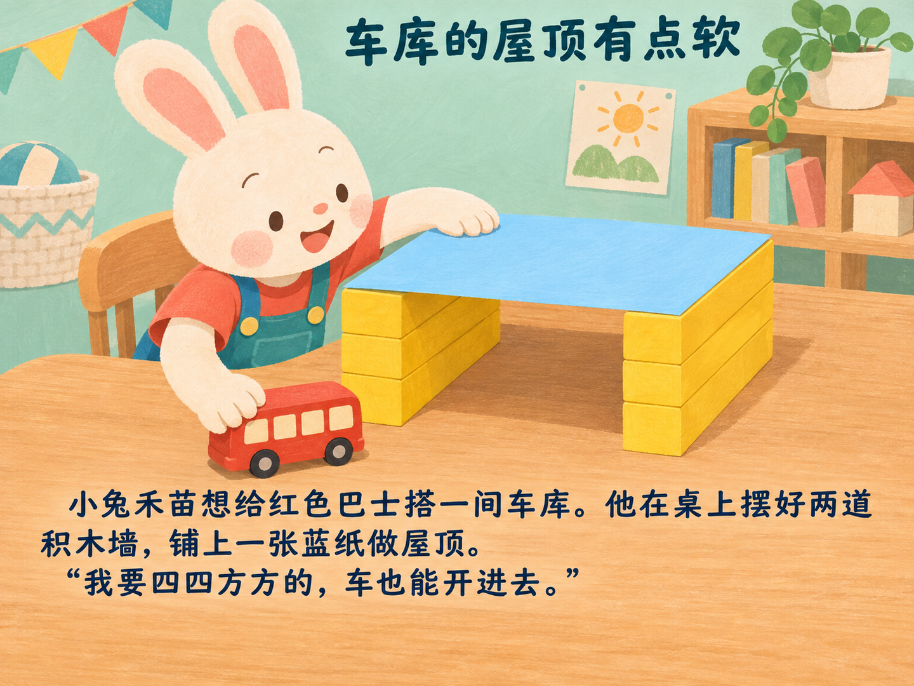

<!doctype html><html lang="zh-CN"><meta charset="utf-8"><meta name="viewport" content="width=device-width,initial-scale=1,viewport-fit=cover"><title>车库的屋顶有点软｜2026-11-10</title><style>*{box-sizing:border-box}html,body{margin:0;background:#172c30;color:#fff;font-family:system-ui,sans-serif}main{height:100dvh;display:flex;flex-direction:column;align-items:center;justify-content:center;gap:20px;padding:0 12px calc(8vh + env(safe-area-inset-bottom))}img{object-fit:contain;max-height:calc(100dvh - 8vh - env(safe-area-inset-bottom) - 64px);max-width:100%;height:auto;width:auto;min-height:0}nav{height:44px;display:flex;align-items:center;gap:24px;flex-shrink:0}button{height:44px;min-width:88px;border:0;border-radius:8px;background:#f3e5ca;color:#19383d;font-size:16px}button:disabled{opacity:.35}#counter{min-width:60px;text-align:center}</style><main><nav aria-label="翻页"><button id="prev">上一页</button><span id="counter"></span><button id="next">下一页</button></nav></main><script>const prose=["小兔禾苗想给红色巴士搭一间车库。他在桌上摆好两道积木墙，铺上一张蓝纸做屋顶。“我要四四方方的，车也能开进去。”","巴士开到门口，纸屋顶却弯下来，轻轻搭在车顶上。禾苗把车往后退了退，皱起鼻子：“这间车库，好像在打瞌睡。”","他取下蓝纸，用手掌仔细抹平，再放回原来的墙上。可手一松，屋顶又垂下去。“醒一醒呀！”禾苗小声叫它。","爸爸远川来到桌边，先看看屋顶，又看看停在外面的巴士。“它要是变成尖尖的，还能是我的车库吗？”禾苗护住蓝纸。","“不改成尖屋顶。”爸爸说，“我们试着让这张纸挺一点。”他用手指比了比蓝纸的前边和后边：“只折这两条边，好吗？”","禾苗点点头，扶住蓝纸。爸爸把前后两条边向上折起，压出整齐的折痕。平平的纸，多了两道矮矮的纸沿，像伸了个懒腰。","他们把蓝纸放回同样的两道墙上。禾苗轻轻碰了碰，惊喜地发现它没那么容易弯了。爸爸说：“折出纸沿，形状变了，就更能撑住。”","禾苗蹲到桌边，让眼睛和巴士一样高。“这回头顶有空啦！”他慢慢推车，红色巴士钻进车库，屋顶没有再搭下来。","巴士停稳了，禾苗却又把它倒出来。“还要试一次？”爸爸问。“嗯，它晚上也要回来停车。”禾苗认真地说。","红色巴士又一次稳稳开进去。禾苗摸摸那两道纸沿：“这回你可以睡了，不用趴在车上。”爸爸轻轻笑了，车库里安安静静的。"];let n=0;const image=document.getElementById('page'),prev=document.getElementById('prev'),next=document.getElementById('next'),counter=document.getElementById('counter');function show(){image.src='page-'+String(n+1).padStart(2,'0')+'.png';image.alt=prose[n];counter.textContent=(n+1)+' / 10';prev.disabled=n===0;next.disabled=n===9}function turn(d){n=Math.max(0,Math.min(9,n+d));show()}prev.onclick=()=>turn(-1);next.onclick=()=>turn(1);document.onkeydown=e=>{if(e.key==='ArrowLeft')turn(-1);if(e.key==='ArrowRight')turn(1)};let x=0;image.addEventListener('touchstart',e=>{x=e.changedTouches[0].clientX},{passive:true});image.addEventListener('touchend',e=>{const d=e.changedTouches[0].clientX-x;if(Math.abs(d)>50)turn(d<0?1:-1)},{passive:true});show();</script></html>